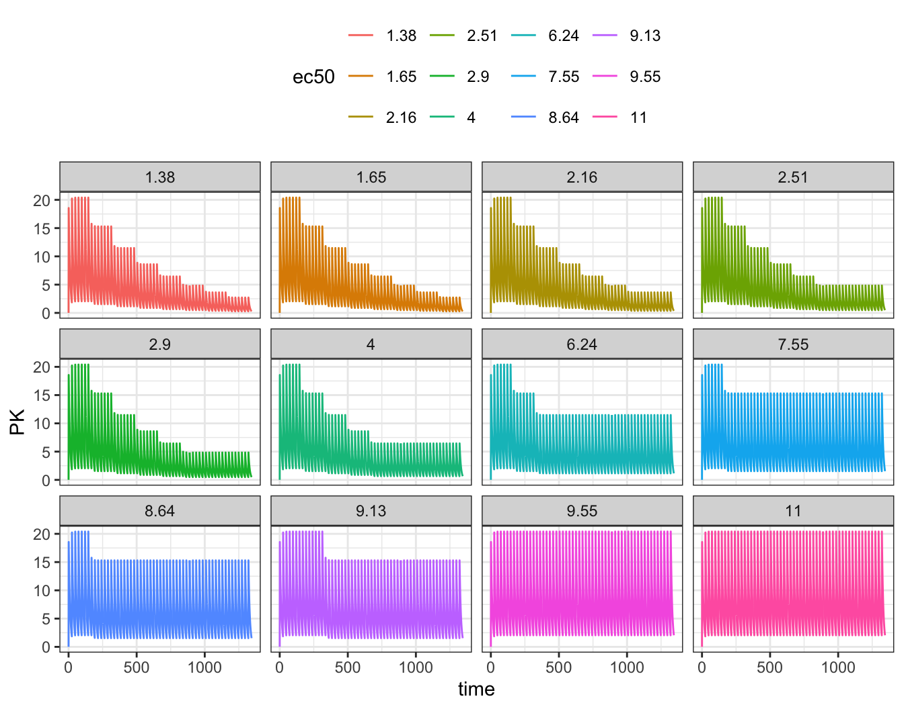
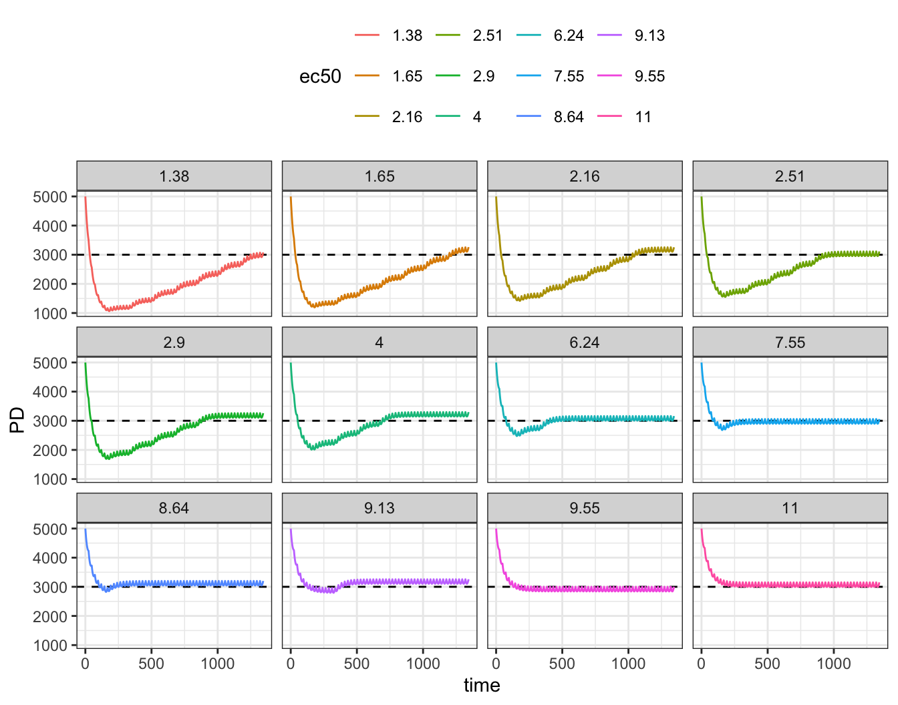

library(mrgsolve)
library(dplyr)
library(ggplot2)1 Introduction
The evtools plugin is a set of functions and classes you can use to implement dosing regimens from inside your model. It first became available in mrgsolve 1.4.1.
The most common use for this plugin is when you want to implement dynamic dosing simulations where the dose amount or the dosing interval is able to change based on how the system has advanced up to a certain point. For example, you might have a PKPD model for an oncology drug that includes a PK model for the drug as well as a dynamic model for platelets where a decline in platelets is driven by the drug concentration. In this case you might monitor platelets at different clinical visits and reduce the or hold dose or increase the dosing interval in response to Grade 3 or Grade 4 thrombocytopenia.
In this blog post, I’ll introduce the new functionality provided by evtools. This is a rather long and detailed post because I’m going to be using it to prototype demo / documentation for these new features. I want to take the time to touch on different aspects of evtools in some detail for clarity, so it might take some time to work through the content. But each feature has a complete working example to show you a working model and the associated simulation output. So keep reading and see how these features might be helpful to you in your dynamic dosing simulation work.
2 Setup
3 Invoking evtools
Like any plugin, you need to opt in to using the functionality provided by evtools. Do this with the $PLUGIN block
$PLUGIN evtoolsPlugins bring in additional functionality or syntax beyond what you get with the basic mrgsolve model code. They either make your model more convenient (to code) or more powerful.
4 Everything is in the evt namespace
All of the functionality provided by evtools is within a namespace called evt. To access functions, typedefs or classes in evt, please point to the namespace by prefixing with evt::.
For example, there a function called bolus() which is located in the evt namespace. So we have to call that function with evt::bolus() rather than plain old bolus(). This prefixing is roughly equivalent to calling dplyr::mutate() or purrr::map() which is currently a popular R coding style.
Another example is a typedef called evt::ev for the C++ event objects we use in the model. That evt::bolus() function an be called in a way that returns an event object. You can use the typedef in evt like this
evt::ev dose = evt::bolus(100, 1);Then work with the dose object as you wish (keep reading for more discussion about how this works).
5 Functions to administer single doses now
Users have been able to give doses from inside their mrgsolve model for a while now. With the evtools plugin, this should be much easier to do, with a simple, easy to remember syntax.
To trigger a single bolus dose of 100 units into the first compartment, call
evt::bolus(self, 100, 1); The arguments here are
self(databox) - an object used by mrgsolve to communicate with the model codeamt(double) - the dose amountcmt(int) - the dose compartment number
Notice there is no return value to this function; this one call specifies the dose and sends it back to mrgsolve via self to implement.
To trigger a single infusion of 100 units into the first compartment with rate of 5 units / time, call
evt::infuse(self, 100, 1, 5);The signature for evt::infuse() is similar to evt::bolus(), but just add a rate argument at the end of the signature.
self(databox) - an object used by mrgsolve to communicate with the model codeamt(double) - the dose amountcmt(int) - the dose compartment numberrate(double) - the infusion rate
You should call evt::bolus() and evt::infuse() from $ERROR. You will also need to figure out when the dose should be triggered. Writing the following code will give you a dose every time $ERROR is called
$ERROR
evt::infuse(self, 100, 1, 5);This is probably not what you want. There are multiple ways you can handle this. The simplest way is to check TIME and EVID
if(TIME==0 & EVID==0) {
evt::infuse(self, 100, 1, 5);
}This will get you a dose when TIME==0 and EVID==0. I highly recommend checking something other than just TIME when deciding to dose since there may be other “events” that are taking place at the time you want to check for giving a dose. You can easily fire off two doses at the dose time rather than just the intended one dose.
5.1 Example
Model evtools-1.mod will implement a dose via evt::infuse().
NoteSee the full model 1 code
evtools-1.mod
$PARAM CL = 1, V = 10, KA = 1
$PKMODEL cmt = "GUT,CENT", depot = TRUE
$SET outvars = "CP"
$PLUGIN evtools
$ERROR
if(TIME==0) evt::infuse(self, 100, 2, 100.0/20.0);
capture CP = CENT/V;mod <- mread("evtools-1.mod")Building evtools-1_mod ... done.out <- mrgsim(mod, end = 72, delta = 0.2)
plot(out)6 Functions to administer single, customized doses
A similar set of functions will implement bolus or infusion doses, but allowing you to interact with the event object prior to sending it back to mrgsolve.
To create an object for a 100 unit bolus dose into compartment 1, call
evt::ev dose = evt::bolus(100, 1); The arguments here are dose amt and the dosing compartment number. Notice that we don’t pass in self, but rather we get the object back (as dose) for us to work with.
To create an object for a 100 unit infusion into compartment 1 with rate of 5 units / time, call
evt::ev dose = evt::infuse(100, 1, 5); Again, the arguments are: amt, cmt, rate and we get an object back with which we can work.
6.1 Functions to work on event objects
You can use the following functions to work on the event objects returned by evt::bolus() and evt::infuse()
evt::retime(<event object>, <time>)- set thetimeattribute; this also sets thenowattribute tofalseso the dose will get scheduled in the future if<time>is greater than the currentTIME
evt::now(<event object>)- make the event happennow; when mrgsolve processes this event object, thetimeattribute will be ignored
6.2 Be sure to send the object back to mrgsolve
When you create an event object through
evt::ev dose = evt::infuse(100, 1, 5); you have to be sure to “send” the event object (dose) object created by the call back to mrgsolve for processing.
New in mrgsolve 1.4.1 is a push() method in the self object that lets you “push” the event back for processing. For the dose object, it would look like
self.push(dose);The previous syntax for pushing event objects back was pretty technical and difficult to remember. That old syntax is still valid, but we recommend calling push() as shown above.
6.3 Example
Model evtools-2.mod shows an example of creating an event object, retiming the dose and sending it back to mrgsolve. We’ll start an infusion of 100 mg over 28 hours and have it start 12 hours into the simulation.
NoteSee the full model 2 code
evtools-2.mod
$PARAM CL = 1, V = 10, KA = 1
$PKMODEL cmt = "GUT,CENT", depot = TRUE
$PLUGIN evtools
$SET outvars = "CP"
$ERROR
if(TIME==0 && EVID==0) {
evt::ev dose = evt::infuse(100, 2, 100.0/28.0);
evt::retime(dose, 12);
self.push(dose);
}
capture CP = CENT/V;mod <- mread("evtools-2.mod")Building evtools-2_mod ... done.out <- mrgsim(mod, end = 72, delta = 0.2)
plot(out)7 An object to implement a full dosing regimen
In the previous sections, we’ve looked ways you can trigger a single dose from within your model file. You could trigger a sequence of doses (e.g., once-daily dosing) by using these functions with a little bit of bookkeeping. But it would be convenient to just tell mrgsolve that you want
- a certain dose
- given at a certain interval
- for a certain duration
This is what the evt::regimen class will do for you via the evtools namespace. In addition to just starting the regimen, you can change the regimen (dose amount, dose interval, anything) at any point in the simulation.
This requires a little more coding that the convenience functions we discussed earlier. In the following sections, we will talk you through each part in order and then show a complete example.
7.1 Setting up a regimen object
To create the regimen object, you have to declare this in the $GLOBAL block
$GLOBAL
evt::regimen reg;When you create the object in $GLOBAL, you are allowing any other block to interact with or modify that object.
7.2 Initializing the regimen object
We initialize by passing in the self object to the init() method. This makes sure the regimen can communicate with mrgsolve (via self). You only need to do this once, so you can write this in either $PREAMBLE
$PREAMBLE
reg.init(self);or in $PK (it’s ok to do this multiple times)
$PK
if(NEWIND < 1) {
reg.init(self);
}7.3 Setting up the regimen object
For every subject, we want to set (or reset) this object to the starting dose, interval, etc. There are a series of “setter” functions that allow you to set each of these attributes For a 100 mg infusion into the first compartment over 1.5 hours every 24 hours for a week, it would look like
$PK
if(NEWIND <= 1) {
reg.init(self);
reg.amt(100);
reg.cmt(1);
reg.rate(reg.amt()/1.5);
reg.ii(24);
reg.until(168);
}Note that you will probably want to avoid hard-coding these numbers in to your model. It will work better if you pass them as parameters, so they can be adjusted from simulation to simulation.
Also note that I’ve put this in $PK because we are setting up the object at the start of each new individual in the problem.
7.4 Execute the regimen
Once you have everything set up, call execute() to actually start giving the doses; this should be done in $ERROR.
$ERROR
reg.execute();That’s it! Your dosing regimen is now active.
7.5 Example
Model evtools-3.mod gives a very simple example of setting up a dosing regimen using evt::regmen.
NoteSee the full model 3 code
evtools-3.mod
$PARAM CL = 1, V = 10, KA = 1
$PARAM
DOSE = 100, INTERVAL = 24, DUR = 0.5, UNTIL = 168, WHERE = 2
$PKMODEL cmt = "GUT,CENT", depot = TRUE
$SET outvars = "CP"
$PLUGIN evtools
$GLOBAL
evt::regimen reg;
$PK
if(NEWIND <= 1) {
reg.init(self);
reg.amt(DOSE);
reg.ii(INTERVAL);
reg.rate(DOSE/DUR);
reg.until(UNTIL);
reg.cmt(WHERE);
}
$ERROR
reg.execute();
capture CP = CENT/V;mod <- mread("evtools-3.mod")Building evtools-3_mod ... done.out <- mrgsim(mod, end = 200, delta = 0.1)
plot(out)Note that we didn’t use a data set for this simulation; all of the doses in the regimen come from the reg object we set up.
7.6 Update the dose regimen
What if we want to make changes to the regimen? Say we have a PKPD model and want to lower the dose whenever the PD marker gets too low or too high?
This is handled naturally within the evt::regimen framework by calling the same setter functions you used to set / reset the regimen object at the start of the problem as shown in the next example.
7.7 Example
Model evtools-4.mod gives an example of dynamically changing the dose using evt::regmen.
In this example, we have a indirect response PKPD model where concentration inhibits the production of the response. The EC50 is 7 ng / mL but with substantial between subject variability.
Every subject starts on 200 mg once daily. Once a week, we’ll reduce the dose by 25% if the PD response is smaller than 3,000. This isn’t terribly sophisticated decision rule but we’ll stick with it for simplicity.
NoteSee the full model 4 code
evtools-4.mod
$PARAM CL = 1, V = 10, KA = 1
$PARAM KIN = 100, KOUT = 0.02, EC50 = 7
$PARAM
DOSE = 100, INTERVAL = 24, DUR = 0.5, UNTIL = 168, WHERE = 2
$OMEGA 0.5
$CMT GUT CENT PD
$PLUGIN evtools
$GLOBAL
evt::regimen reg;
$PK
if(NEWIND <= 1) {
reg.init(self);
reg.amt(DOSE);
reg.ii(INTERVAL);
reg.rate(DOSE/DUR);
reg.until(UNTIL);
reg.cmt(WHERE);
}
PD_0 = KIN / KOUT;
double ec50 = exp(log(EC50) + ETA(1));
$ODE
dxdt_GUT = -KA * GUT;
dxdt_CENT = KA * GUT - (CL/V) * CENT;
double cp = CENT/V;
double inh = cp/(ec50 + cp);
dxdt_PD = KIN * (1-inh) - KOUT * PD;
$ERROR
capture PK = CENT/V;
if(fmod(TIME, 168)==0 && PD < 3000) {
reg.amt(reg.amt() * 0.75);
reg.rate(reg.amt() / DUR);
}
capture dose = reg.amt();
reg.execute();
$CAPTURE ec50We’ll simulate 12 random subjects
idata <- expand.idata(ID = seq(12), DOSE = 200, UNTIL = 2400)mod <- mread("evtools-4.mod", outvars = "PK,PD,dose,ec50")Building evtools-4_mod ... done.set.seed(12345)
out <- mrgsim(
mod,
idata = idata,
end = 8*168
)Look at PK, PD, and dose versus time; I’ll facet the plots by the simulated EC50, from lowest to highest.
First, concentration versus time
ggplot(out, aes(time, PK, col = ec50)) +
geom_line() + facet_wrap(~ec50)
Next, pharmacodynamics versus time; remember, we’re trying to keep the predose response above 3,000
ggplot(out, aes(time, PD, col = ec50)) +
geom_hline(yintercept = 3000, lty = 2) +
geom_line() + facet_wrap(~ec50)
Finally, the current dose versus time
ggplot(out, aes(time, dose, col = ec50)) +
geom_line() + facet_wrap(~ec50) + ylim(0, NA)Finally, we can look at how doses, PK and PD fared at the end of the simulation. Only a handful of subjects stayed at the starting dose; most got dose reduced with some ending on doses far below the 200 mg starting dose.
out %>% group_by(ID) %>% slice(n()) %>% ungroup() %>% arrange(ec50)# A tibble: 12 × 6
ID time PD ec50 PK dose
<dbl> <dbl> <dbl> <fct> <dbl> <dbl>
1 9 1344 3078. 1.38 0.273 26.7
2 7 1344 3261. 1.65 0.273 26.7
3 11 1344 3256. 2.16 0.364 35.6
4 12 1344 3113. 2.51 0.486 47.5
5 6 1344 3261. 2.9 0.486 47.5
6 10 1344 3298. 4 0.647 63.3
7 5 1344 3161. 6.24 1.15 112.
8 8 1344 3059. 7.55 1.53 150
9 3 1344 3201. 8.64 1.53 150
10 1 1344 3258. 9.13 1.53 150
11 4 1344 3002. 9.55 2.05 200
12 2 1344 3152. 11 2.05 200 8 Dynamic change in dosing interval
Model evtools-5.mod gives an example of dynamically changing the dose interval using evt::regmen. When we’ve done dynamic dosing in the past, it was always pretty easy to change the dose during the simulation, maybe through the bioavailability parameter. But changing the interval seemed impossible … until now.
To start, doses will be administered every 24 hours. Then, the dosing interval will be cut in half (every 12 hours) while doubling the dose amount; this will happen after the first week of dosing.
$ERROR
if(evt::near(TIME, 168.0) && EVID > 0) {
reg.ii(12);
reg.amt(DOSE/2.0);
}Notice I’m using evt::near() here to compare two floating point numbers. This works similar to dplyr::near(), including default tolerance of 1e-8.
Also, I’m checking that EVID > 0; the reason for this is that we are using reg.flagnext() in this model (see below).
At 300 hours, we’ll bring the dose back to double the starting value and change the dosing interval to every 48 hours
$ERROR
if(evt::near(TIME, 168) && EVID > 0) {
reg.ii(reg.ii()/2.0);
reg.amt(reg.amt()/2.0);
}
if(evt::near(TIME, 300) && EVID > 0) {
reg.ii(reg.ii()*4);
reg.amt(reg.amt()*4);
}
NoteSee the full model 5 code
evtools-5.mod
$PARAM CL = 1, V = 10, KA = 1
$PARAM
DOSE = 100, INTERVAL = 24, DUR = 0.5, UNTIL = 540, WHERE = 2
$PKMODEL cmt = "GUT,CENT", depot = TRUE
$SET outvars = "CP"
$PLUGIN evtools
$GLOBAL
evt::regimen reg;
$PK
if(NEWIND <= 1) {
reg.init(self);
reg.amt(DOSE);
reg.ii(INTERVAL);
reg.cmt(WHERE);
reg.until(UNTIL);
reg.flagnext();
}
$ERROR
if(evt::near(TIME, 168) && EVID > 0) {
reg.ii(reg.ii() / 2.0);
reg.amt(reg.amt() / 2.0);
}
if(evt::near(TIME, 300) && EVID > 0) {
reg.ii(reg.ii() * 4);
reg.amt(reg.amt() * 4);
}
reg.execute();
capture CP = CENT/V;mod <- mread("evtools-5.mod")Building evtools-5_mod ... done.mrgsim(mod, end = 600, delta = 0.1) %>% plot()8.1 Force the model to stop at dose times
This model uses the object.flagnext() setter. When we “flag” the next dose, we tell mrgsolve to always stop the simulation when we expect the next dose to be given. This is a hard stop with a reset / reinitialization of the ODE solver.
This isn’t strictly necessary in this simulation because we already have observation records at all of the times when doses might be due (delta is set to 0.1 here). But you can use object.flagnext() in case you don’t want to sample that intensively or in case you can’t be sure the ODE solver will otherwise stop at the time when you might way to give a dose. To be clear: you must make sure the system “hits” all of the dose times. Usually this is done at observation times. If it can’t be guaranteed at observation times, then you need to tell the problem to flag the next dose times via object.flagnext().
9 Remember: there (usually) is no data set
As a general consideration for most or all of the functionality in evtools, it’s important to remember that you don’t need a data set for these simulations. Normally you do need one for doses, at least. This gives a signal to mrgsolve when to stop and actually give the doses and this is done before the simulation starts. With dynamic dosing within the model itself, it’s different: we are making dosing decisions from minute to minute, giving a dose when it is due.
This means there is more pressure on you to make sure you are requesting observations at times when you might need to give a dose. If you don’t do that, there is no reason why mrgsolve will stop to give a dose when you think it should. There is some functionality baked into these tools to help that, but you need to be aware of the model time and when the model might be stopping to let you make an intervention. This isn’t always very difficult to do, but it could be a little surprising if you forget to consider this issue.
Along the same lines, be very careful when requesting that model stops to give a dose based on TIME alone. For example I might want the model to stop at 24 hours to give a dose
if(TIME==24) <give a dose>;This seems like a very reasonable thing to do. But do you know that the model will only stop once at TIME==24? could there be multiple stops at TIME==24 that would give you multiple doses in this case?
I’d recommend refactoring this check to include EVID as well
if(TIME==24 && EVID==0) <give a dose>;Here, assuming we have a single time vector for each individual, you can know that the model stops only once for an observation at 24 hours and you won’t get a second dose for another, non-EVID==0 record.
Also, what if we wanted this to happen
if(TIME==14.2 && EVID==0) <give a dose>;But passed in a time vector of
seq(0, 24, 1) [1] 0 1 2 3 4 5 6 7 8 9 10 11 12 13 14 15 16 17 18 19 20 21 22 23 24In this case, the model will not stop at 14.2 hours because we only have whole number observation times.
Again, most of the time it’s not difficult to easily get around these issues; but please do be cautious when planning your simulation inputs.
If you do run into trouble here, it can be helpful to pass in a data set with more carefully thought out observations. Or, write some R code to create a data set with milestones coded with different non-zero event IDs that you can check in your model code to see if something needs to happen. This seems like a lot of work up front, but it can actually save you time fixing issues down the road.
10 More to come
This is just the start - basic functionality to get in the game, see how it works, etc. I know of several additional features / nuance that will eventually be needed to handle inevitable complexity in many dose adjustment schemes. This will come, along with features that we don’t even know about yet.